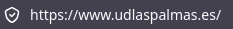
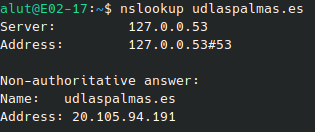
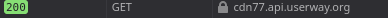
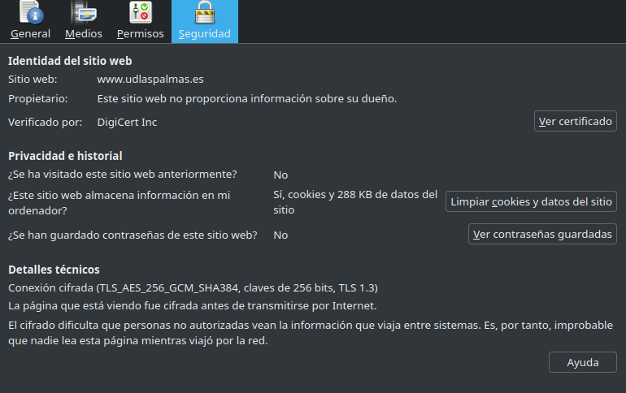
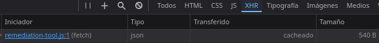

La web que he elegido
He elegido UD Las Palmas | Web Oficial porque es mi equipo de fútbol favorito.
Glosario
| Término | Definición con mis palabras | Ejemplo en mi web |
|---|---|---|
| Cliente | Es el dispositivo que solicita información desde un servidor. | No hay ejemplo. |
| Servidor | Es un ordenador potente que está siempre conectado a internet. | Servidor informático. |
| Servidor web | El encargado de recibir las peticiones de los usuarios. | El servidor como apache que procesa las solicitudes. |
| Apache | El programa de servidor web más famoso. | El encargado de gestionar los contenidos cuando alguien entra. |
| URL | Es lo que escribes exactamente en la barra del buscador para llegar a la página. | https://www.udlaspalmas.es/ |
| Protocolo | Un lenguaje que usan los ordenadores para comunicarse. | https:// |
| Dominio | El nombre que se le da a una página web. | udlaspalmas.es |
| Ruta | El camino especifico que te lleva a un sitio. | Ejemplo: /primer-equipo/plantilla |
| Dirección IP | El número especifico de una página en este caso. | 127.0.0.53 |
| DNS | Es para guardar la IP y el nombre de la página. | Traduce udlaspalmas.es a la IP, que en este caso es 127.0.0.53 |
| HTTP | Enviar los datos de la página dentro de internet. | Transferir datos entre la web y el usuario. |
| HTTPS | Proteger y asegurar los datos del usuario dentro de la página. | Guardar bien los datos de los usuarios que pongan su información dentro de la página de la UD Las Palmas. |
| Puerto | Por donde entra o sale información. | Sería el 443. |
| Petición | Cuando le das clic en un apartado y el servidor solicita el contenido. | Si le das clic a las noticias, el navegador manda la solicitud. |
| Respuesta | Lo que devuelve el servidor a lo que tu hayas solicitado. | Lo que te enseña el servidor despúes de darle clic a algo. |
| Código de estado | Código que te da el servidor según lo que haya pasado. Ejemplo: El 200 significa que salió todo bien y el 404 que hubo un error. | 200 al entrar en la página. |
| Web estática | Una página que le sale igual a todo el mundo. | El Aviso Legal o Las Politicas de Privacidad. |
| Web dinámica | Una página que es difernete para cada usuario depende de los permisos que tengas, la hora, etc... | La sección de Tienda Online o el Calendario de Partidos. |
| PHP | Un lenguaje que se ejecuta para consultar datos. | Por ejemplo: Cargar la lista de los jugadores. |
| Base de datos | Son campos donde se guarda la información web. | Para guardar la plantilla del club. |
| LAMP | Un paquete que acompaña cosas para completarlas. | La página de la UD Las Palmas está creado por Linux, Apache, MySQL y PHP. |
| JSON | Es un formato de texto. | Pedir y recibir los resultados de los últimos partidos de la UD Las Palmas sin tener que recargar la página. |
| XML | Es un formato para ordenar datos. | La UD Las Palmas entrega a google un archivo que es "sitemap.xml". |
Evidencias




